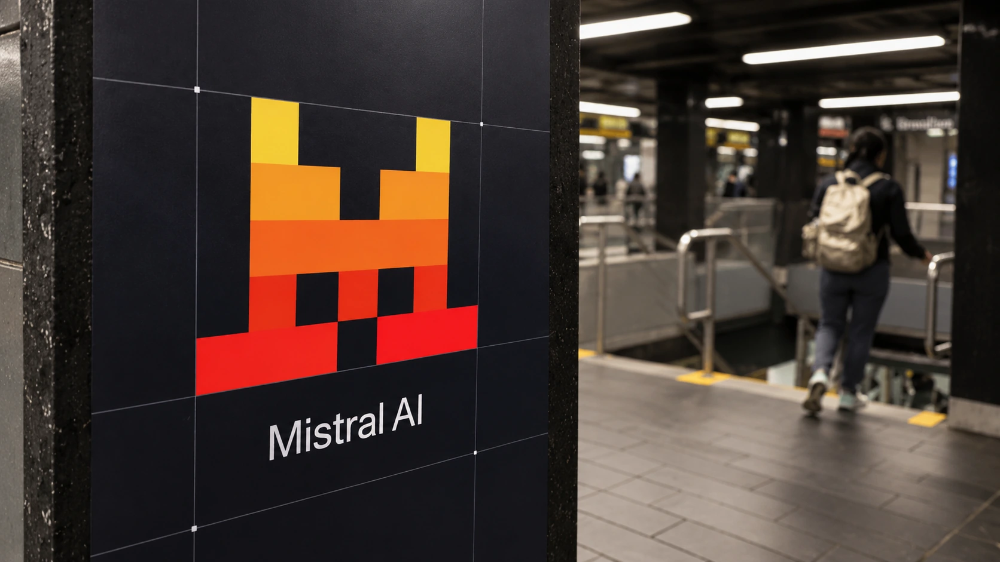

Mistral Releases Large 4 AI Weights With a Licensing Condition for Model Hosts
Mistral’s Large 4 can now run outside its own cloud. The release gives businesses more control, but model-hosting firms face a separate license requirement.

Mistral AI released the downloadable weights of its Large 4 model Thursday, expanding access beyond the public preview it introduced earlier this month. The French company is offering customers more control over where the software runs, while keeping a commercial licensing requirement for businesses that operate a model-hosting service.
The distinction matters for the economics of open AI. Downloadable weights let organizations deploy and modify the model without sending every request to the developer’s own cloud. They do not automatically make every commercial use unrestricted. Mistral’s published license specifically distinguishes internal deployment, embedded end-user products and services that give customers direct control over a model.
The release is more than another promise of future availability. Mistral’s official Hugging Face repository now lists the model’s weight files, configuration and license. The important change from the earlier preview is access to those artifacts, alongside an improved model, rather than simply the announcement of a new brand name.
Open weights, with a defined commercial boundary
Weights are the numerical settings learned during training. Having them gives an organization the ability to run or adapt a model on infrastructure it chooses. That can matter when a company needs to keep sensitive information within its own systems, or wants to evaluate the cost of hosting against paying for an external service.
Mistral calls the governing terms its Ecosystem Open-Weight License, a modified MIT license. It permits use, modification, distribution and further training, subject to conditions. A business operating a Model-as-a-Service offering must obtain a separate commercial license before using the model or derivatives commercially. Calling the release unrestricted open source would obscure that provision.
The license defines that service category around third-party access for inference or further training with meaningful control over inputs, parameters or training data. It excludes products where model capabilities are embedded solely within specific features or controlled workflows, and the mere forwarding of requests to another provider’s hosted models.
It also expressly exempts internal use and use through Mistral’s official products from that separate-license requirement. These distinctions leave room for companies to build applications while reserving a commercial relationship with certain competing infrastructure providers. The practical question for a buyer is what its product allows customers to do, not merely whether it charges money.
A large model still needs an operating plan
The model documentation describes approximately 1.05 trillion total parameters and 52 billion active parameters, including relevant embedding and output layers. Its mixture-of-experts design uses a subset of the network for each token. That reduces active computation relative to using the entire model at every step, but does not eliminate storage, memory and serving requirements.
Large 4 accepts text and image inputs and produces text output. Mistral lists a context window of one million tokens and three reasoning settings: low, medium and high. Those controls let developers choose how much reasoning effort to allocate to a request, rather than treating every workload as equally demanding.
The documentation lists hosted pricing of $0.70 per million input tokens, $0.07 for cached input and $2.10 for output. Those prices describe a hosted service, not the complete cost of running downloaded weights. A self-hosted comparison needs to include hardware utilization, engineering, monitoring and the amount of review required for successful work, as in TTN’s guide to inference economics.
Coding gains are claims to test against real work
Mistral reports a 48% score on the Artificial Analysis Coding Agent Index, effectively matching GLM-5.3 while using 47% fewer tokens per task on average. It also reports improved terminal-based coding performance since the preview. These are results cited by the developer, not TTN’s own evaluation or a guarantee across customer projects.
Fewer tokens can improve economics, but only if the system completes the task accurately. Repository changes still need testing, and security work needs authorized environments and controlled access. The data and permission requirements of enterprise AI remain relevant regardless of who hosts the weights.
The release gives buyers a new combination of deployment choice, model capability and licensing terms. Its commercial significance will depend on whether those choices produce better results for actual workloads after hosting costs, reliability and the relevant license conditions are taken into account.
Sources and methodology
Sources checked October 29, 2026. Official decisions, company statements and reported findings are attributed in the text. Financial and operational implications are TTN editorial analysis.
- Mistral AI, October 29: improved Large 4 weights, benchmark claims and availability
- Mistral: official Large 4 model card and deployment guidance
- Mistral: published Ecosystem Open-Weight License
- Mistral documentation: architecture, context window and hosted pricing
- Official model repository: published weight-file inventory